Palantir Foundry 平台
面向现代企业的本体论驱动操作系统
Foundry 本体论
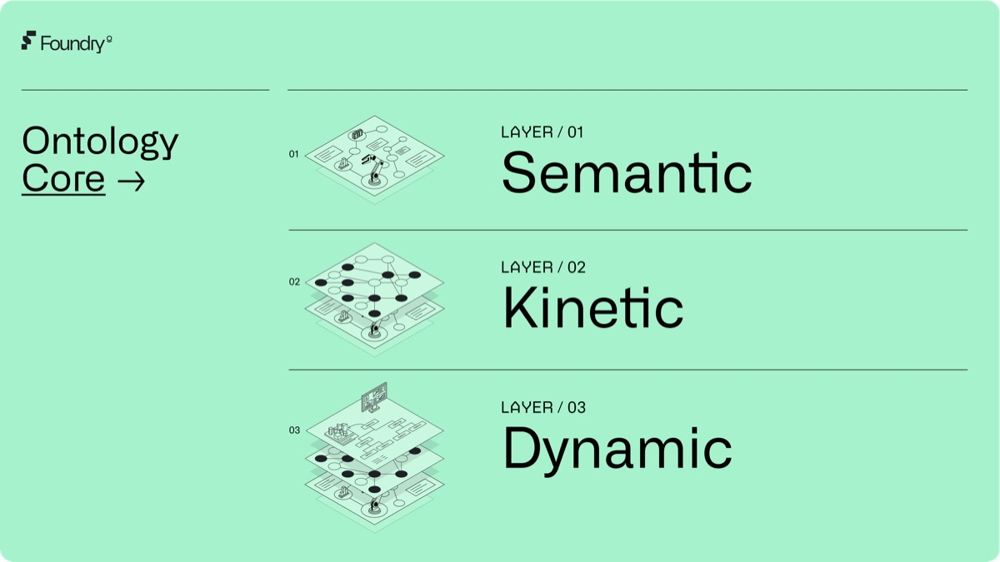
在动态系统中激活您的数据和分析，实现闭环运营。
Foundry 本体论是 Palantir Foundry 的核心。它整合了您业务中的语义、动态和运行要素，使您的团队能够在复杂环境中协调并自动化决策。
步入实时协作 →
借助代表您业务对象、操作和流程的通用逻辑，更快地执行。
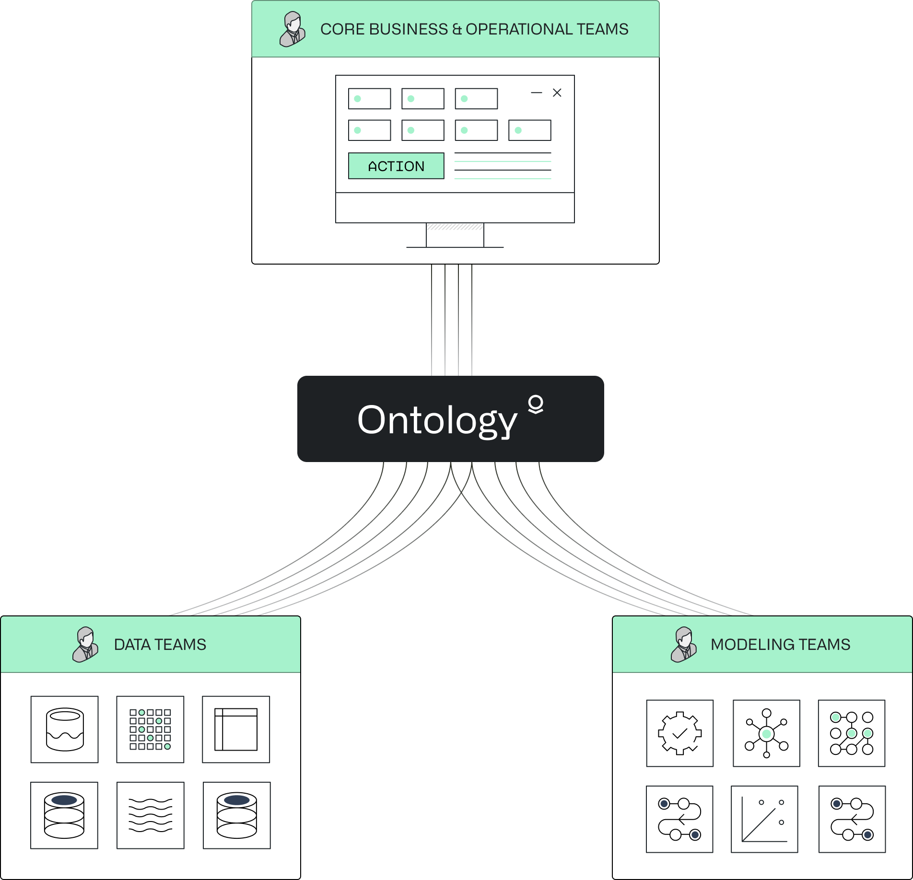
激活您数据和分析的力量。
将您的数据和分析直接融入核心业务和运营团队的日常决策中。捕获决策以实现持续学习。
协作，全面提速。
在您的数据、分析和运营团队之间实现实时协作。将决策集成到通用逻辑层中，随情况变化推动有意义的行动。
最佳的构建方式。
在可扩展的架构上构建 AI 驱动的工作流，复用本体论中的多模态对象、操作和流程。
无需重复。
整合来自您企业架构的数据和模型——无需复制底层资产，也不会破坏现有的真实数据源。
一个平台，全球影响。
资产管理
Jacobs Palantir 与 Jacobs 的智能算法解锁了全厂 20% 的节能效果，消除了运营罚款，并减少了温室气体排放——而这发生在一座已经过优化的水处理厂。
Sonnedix 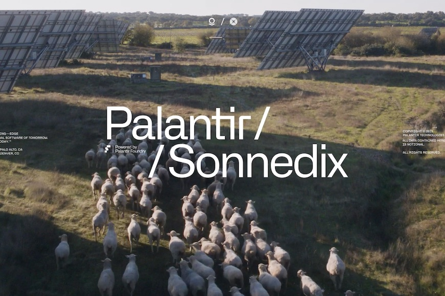
Sonnedix 已在其位于西班牙的 Sonnedix Talayuela 太阳能电站以及其他多个太阳能站点部署了 Palantir Foundry，以彻底实现生产流程数字化并减少工厂停机时间
Southern California Edison (SCE) 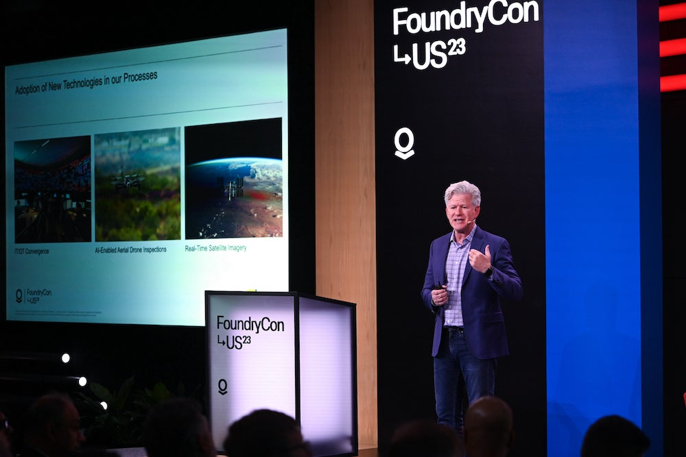
公用事业行业拥有高度复杂的 IT/OT 环境。在 2023 年 FoundryCon 主题演讲中，Southern California Edison (SCE) 的首席信息官 Todd Inlander 探讨了数字化转型在整个行业中的价值。在 SCE，Palantir Foundry 驱动的工作流助力野火预防、客户通知、应急响应和日常气象分析，依托大规模机器学习天气预报、AI 驱动的巡检以及物联网传感器。
生态系统
Skywise 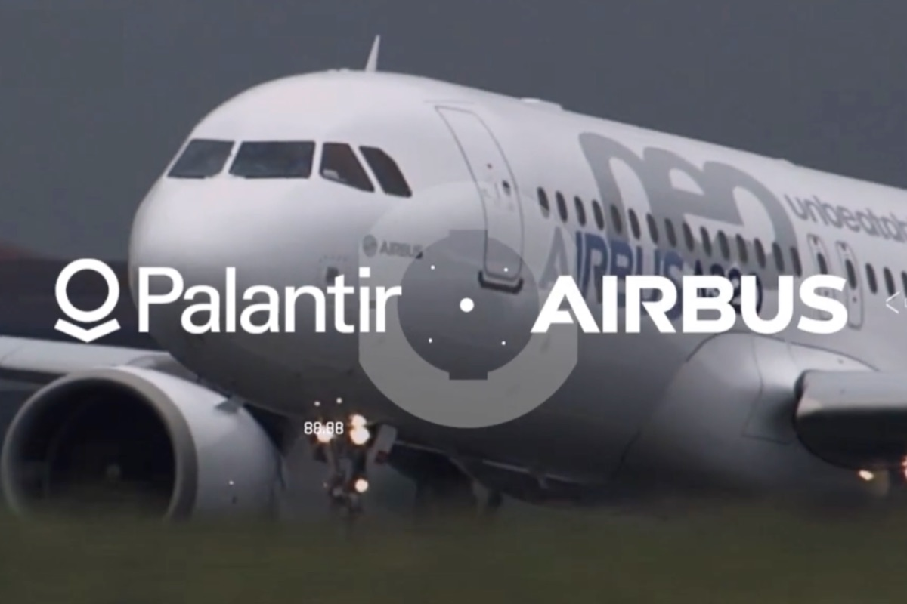
Skywise 利用 AI 分析分散的数据源，为整个航空业提供全新洞察。Skywise 拥有超过 25,000 名用户，为航空公司提供 AI 操作系统，以应对飞机运营挑战。
Trafigura 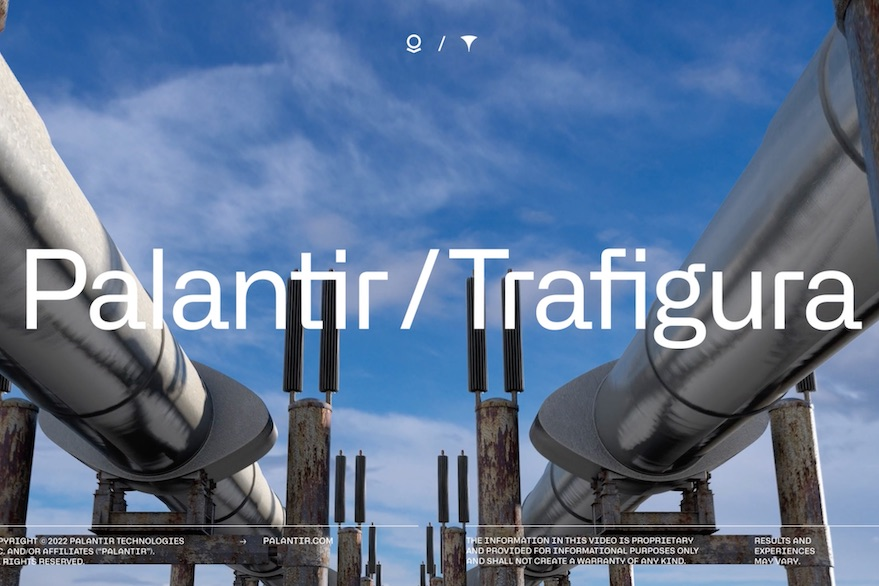
Trafigura 利用 Palantir Foundry 驱动其供应链碳排放平台，采用联合体模式，使全球能源和大宗商品供应链的参与者能够对全生命周期碳强度进行建模，并支持行业参与者协作以提升可见性和报告能力。
Athinia™ 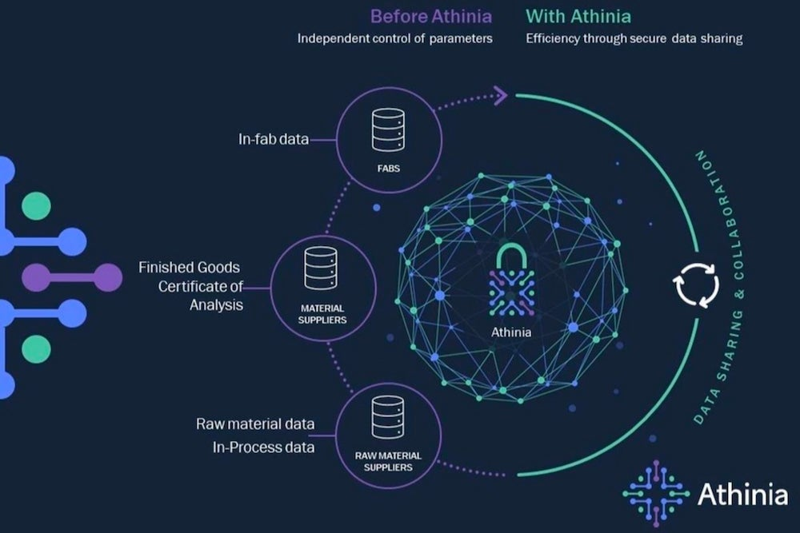
Athinia™ 提供一个安全的数据分析平台，用于协作处理半导体行业各参与方的相关信息，帮助材料供应商和设备制造商利用 AI 和 ML 发掘新洞察，改进半导体制造。
NCATS 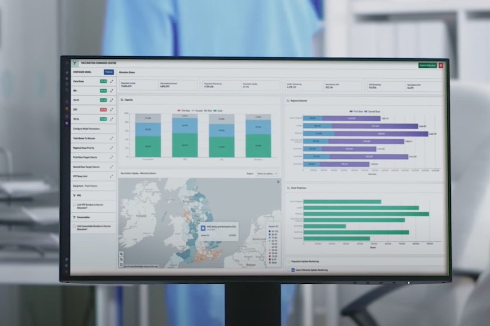
NCATS 安全地汇聚并智能整合来自数千家医院和诊所的去标识化数据，以支持前沿研究。
在这篇论文中，机器学习研究人员能够利用汇总数据有效识别患有“长新冠”的患者，即使缺乏准确的诊断编码。N3C 通过基于目的的访问控制（PBAC）对该项目及数百个其他项目的数据使用和访问进行严格治理。
供应链
Concordance 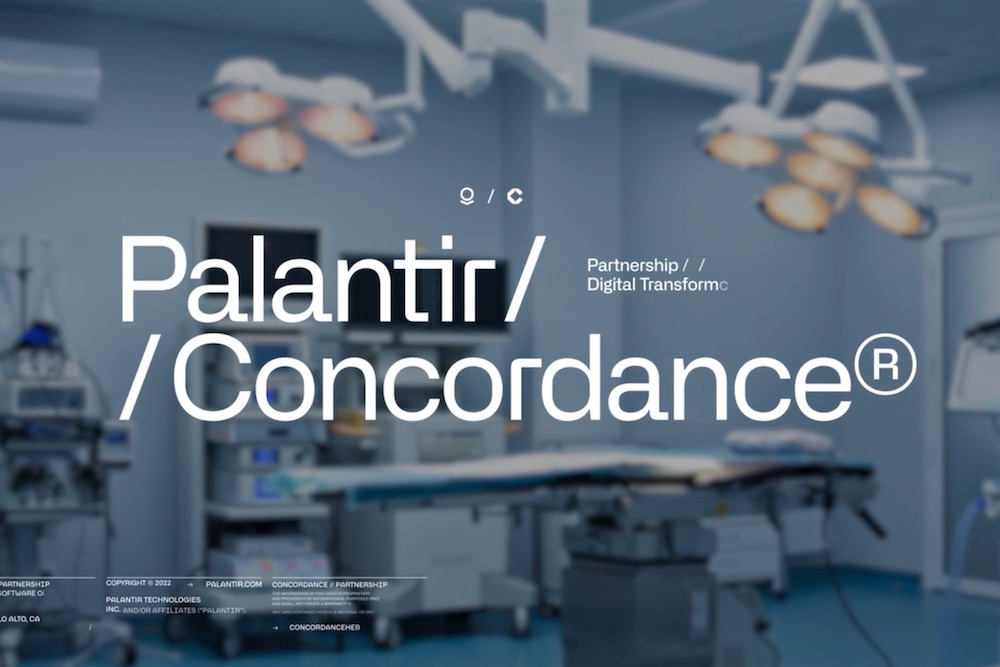
Concordance Healthcare Solutions 正在使用 Palantir Foundry 构建一个能够颠覆这一碎片化网络的生态系统。
Castrol 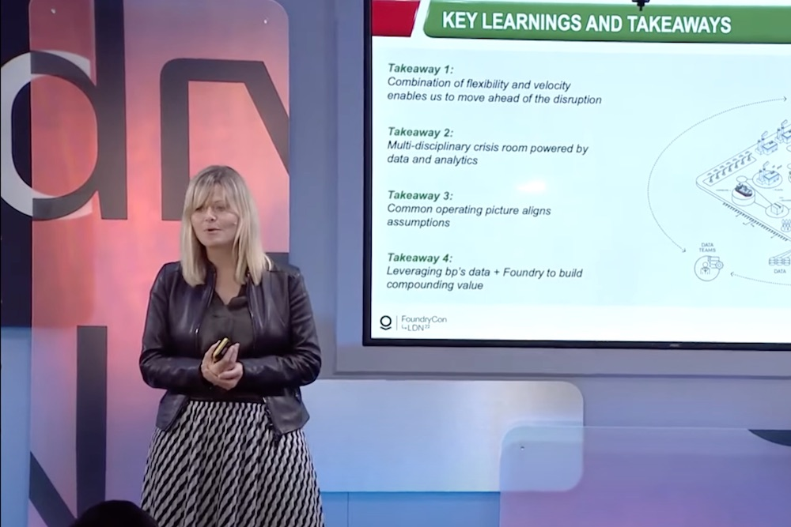
Castrol 与 Palantir 合作，从容应对供应链冲击。
"灵活性与速度的结合使我们能够领先于颠覆性变化，从危机局面迅速恢复到正常业务状态，这一点非常重要——尤其是在资源有限的困难时期。" —— bp 高级营销副总裁兼 Castrol 首席营销官 Nicola Buck
Cardinal Health Cardinal Health 与 Palantir 合作，安全地整合临床数据，并获取动态采购决策洞察。
Foundry 的 AI/ML 能力通过安全地整合和建模诊断、临床和采购数据，为医疗健康系统赋能，从而打造一个能够响应变化的临床集成供应链解决方案 对变化做出响应 实时进行。
工程与制造
医疗服务
克利夫兰诊所 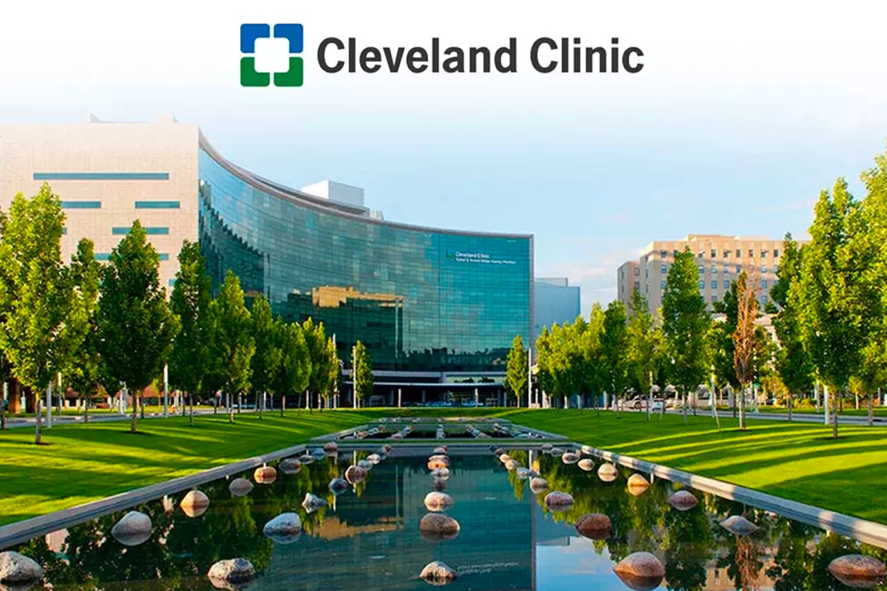
Cleveland Clinic 如今利用 Palantir 的 Virtual Command Center 帮助改善医院各个运营环节的医疗服务交付，包括简化床位分配和出院管理以缩短等待时间并减少住院时长；优化人员配置以提供更均衡的护理；以及提高手术室时段等关键资源的利用率。
坦帕总医院 Palantir 正在帮助 Tampa General 将其组织推向医疗创新的前沿，通过整合关键数据源并在 Foundry 中应用高级分析，为整个医疗系统中的护理人员和决策者提供洞察——从改善运营到提升临床护理，再到加速研究洞察的生成。
SOMPO SOMPO 的 Real Data Platform 由 Foundry 提供支持，为轮班工作人员提供了一个安全的环境，用于查看和管理租户护理数据，包括用于测量关键生命体征的定制传感器警报。如今，过去需要 30 分钟才能完成的数据收集和护理计划制定，现在一眼即可完成。
金融服务与风险管理
一家全球性银行 金融机构利用 AI 加速交易监控，并改进风险分析与合规。
交易监控是防范金融犯罪与违规行为的关键防线。Foundry 的 AI 驱动交易监控帮助一家全球性银行将警报处理速度提高了 60%，成本降低了 90%，并将跨司法管辖区的客户搜索速度提高了 90%，同时提升了结果的一致性。
Swiss Re（瑞士再保险公司） 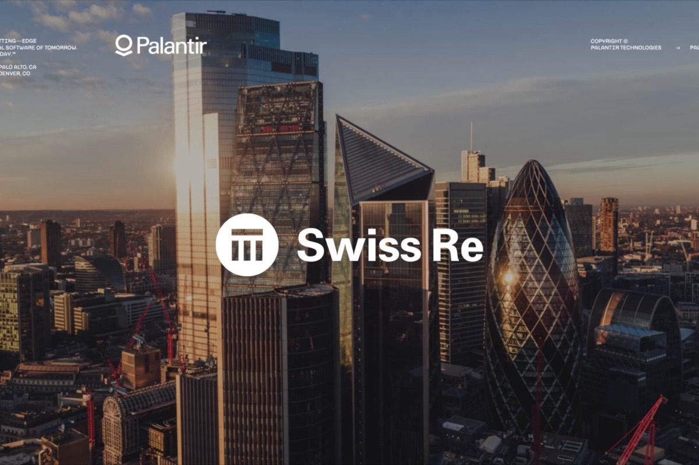
Swiss Re 使用 Foundry 将数据存储库连接到统一的分析数据基础中，在保持强大的数据安全与治理的同时，获得对风险的高级洞察。凭借这种可见性以及在平台内构建复杂工具的能力，Swiss Re 正在提升其客户乃至整个社会的韧性。
一家大型银行 一家大型银行借助 Foundry 为 Next Best Offer (NBO) 营销计划提供支持，将营销活动的上线时间从数月缩短至一天。
奖项 ↘
- 查看完整报告
Palantir 被评为 AI/ML 平台领域的领导者
—— The Forrester Wave™：AI/ML 平台，2024 年第三季度
- 阅读新闻稿
Palantir 荣获 Dresner Advisory Services 2025 年度技术创新与应用创新多个类别的奖项
—— Dresner Advisory Services 2025 年技术与应用奖
- 了解更多
Dresner 将 Palantir 评为 Agentic AI 供应商第一名
—— Dresner Advisory Services 2025 年 Wisdom of Crowds Agentic AI 市场研究
- 了解更多
Dresner 将 Palantir 评为 AI、数据科学和机器学习领域供应商第一名
—— Dresner Advisory Services 2025 年 Wisdom of Crowds AI、DS 和 ML 市场研究
- 了解更多
Dresner 将 Palantir 评为 ModelOps 供应商第一名
—— Dresner Advisory Services 2025 年 Wisdom of Crowds ModelOps 市场研究